Setup
To set up your chess board, place the board in between you and your opponent, with a white square at the bottom right.
You and your opponent each choose a color, and set up your pieces on the two rows of the board nearest each player as follows:
On the front row or the row that is nearer to your opponent, place your eight pawns.
On either end of the back row in the corners, place your two rooks.
Next to your rooks, place your knights.
Next to your knights, place your bishops.
In the center square of the back row that matches your color, place the queen.
Finally, place your king on the final empty square of the back row.
When finished, your board should look like this:
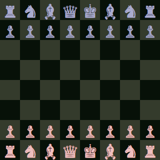
Rules
White goes first, and play alternates. Each turn, you must move one piece according to its rules. You are not allowed to pass your turn. The first player to checkmate the opposing king wins.
General Piece Movement
Most pieces move in a straight line in their given directions, until they run into the edge of the board, run into their own ally pieces, or capture an enemy piece.
King ♔
The king can move a single space in any direction. This is the most important piece.
If your king can't get out of danger, you lose. You also can't move your king into danger.
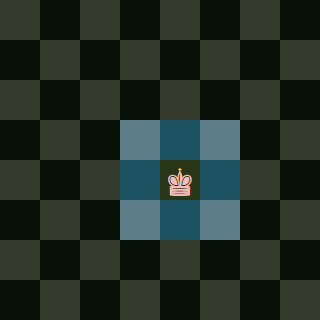
Queen ♕
The Queen is the most powerful piece. It can move any number of spaces in any direction.
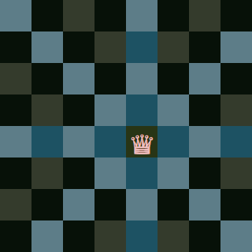
Rook ♖
The Rook can move any number of spaces in cardinal directions (forward, backward, left, or right).
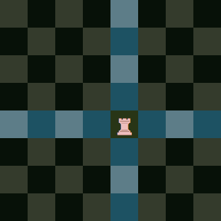
Bishop ♗
The Bishop can move any number of spaces in the diagonal directions.
This means that a bishop is always stuck on one color.
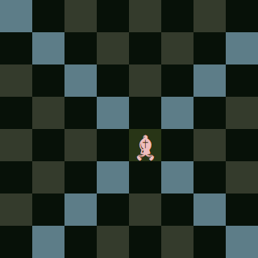
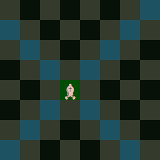
Knight ♘
The last two pieces have more unique movement. The knight moves in an L-shaped pattern.
It also jumps over pieces, meaning nothing can block it as it moves.
It captures enemy pieces it lands on, but can't move to a square occupied by its own ally pieces.
One way to remember the knight movement is to count 1, 2, then 1. First move two spaces in a cardinal direction.
(1, 2). Then make a 90 degree turn (for example, if you started by moving forward, turn left or right) and move one more square. (1).
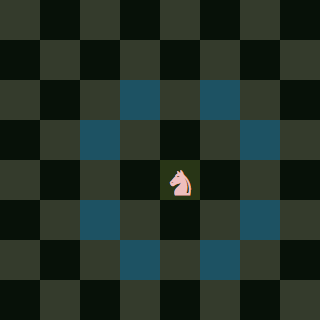

Pawn ♙
Finally, the pawn. This is the weakest piece. It can only move one space straight forward unless certain conditions are met
(remember that forward is towards your opponent, so black pawns move the opposite way of white pawns!).
It also cannot capture pieces moving straight forward. Instead, it captures diagonally forward.
The first time a pawn moves, it can move one or two spaces straight forward.
It can still only capture one space diagonally forward, though.
When the pawn reaches the end of the board, it can promote to a queen, rook, bishop, or knight.
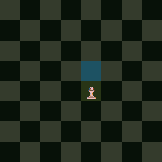
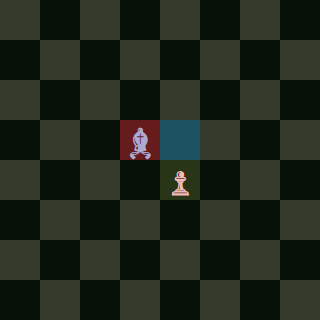
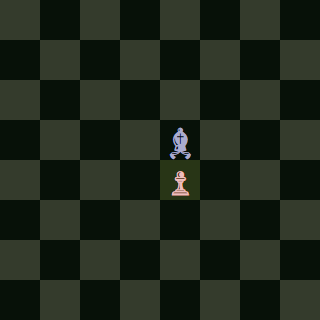
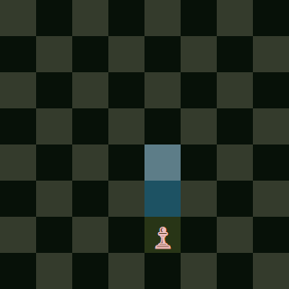
Castling
There are also two special moves that can be made. First is castling. Considered a king move, it also involves one of your two rooks. There are three requirements for castling:
First, the king and rook must not have moved yet. You can't move one and then move it back to its starting position, either.
Second, the spaces between the king and the rook must be clear. You must move all your other pieces out of the way.
Third, the king cannot be in check, move through check, or end up in check.
If all these conditions are met, then you can castle. To castle, take your king and move it two spaces torward the rook you are castling with.
Then, put the rook on the square next to the king on the opposite side that it started from. Castling is an important move that can help keep your king out of danger.
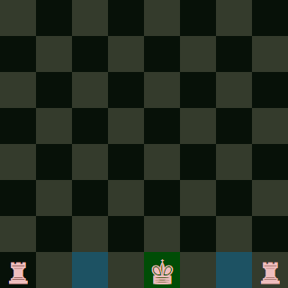
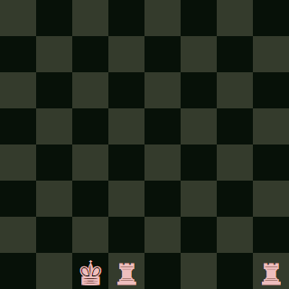
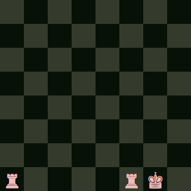
En Passant
The second special move is en passant. It involves one of your own pawns, and one of your opponents pawns that hasn't moved yet.
Your pawn would be positioned to capture the enemy pawn if it only moved a single space forward.
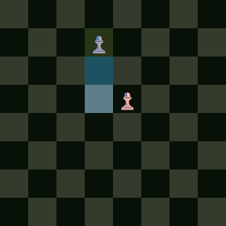
If the opponent instead moves it two spaces forward during their turn, you may still capture it by pretending it only moved one space, but only on that turn.
If you make a different move, you can't capture the pawn in this way during your next turn.
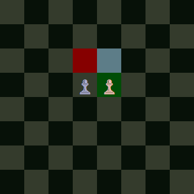
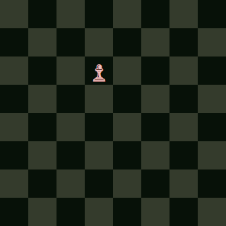
Check and Checkmate, the Goal of the Game
Now that you know how all the pieces move, what is the goal of the game? The goal is to checkmate the enemy king.
And what does that mean? First, I'll explain check. When a piece can capture the enemy king on their next move, that king is in check.
The checked player must make a move that gets their king out of check. The king cannot, under any circumstances, move into check.
There are three ways to get out of check:
First, you can simply move the king to a safer square.
Second, you can capture the piece that is putting your king in check.
Third, you can move one of your pieces in between your king and the opponents piece, blocking the attack.
If you are unable to get out of check, it's checkmate and you lose.
Stalemate
To win the game, your opponents king must be in check. Play must also alternate between white and black, and there is no passing turns. So what happens if your opponent can't make a move, but also isn't in check? The game ends in stalemate, or a draw. The game also ends in a draw after the same position is repeated three times (meaning an infinite repetition of moves has likely been reached), or if the only pieces left on the board are the two kings (because the two kings can never get close enough to checkmate each other).